Add voice control to the bulb
Saying “Okay Google, activate Bulb ON” triggers an IFTTT applet, which writes ON to an Adafruit IO feed. The ESP32 from Task 2 receives it over MQTT and switches the relay.
Overview
Task 2 controlled the bulb from a dashboard. Task 3 replaces the dashboard with a voice command. The ESP32 firmware stays almost the same, because it already listens to the Bulb feed. The new work is the chain in front of it: Google Assistant recognises the phrase, IFTTT turns it into an action, and that action sends ON or OFF to the feed.
Objectives
- Control a bulb with a natural spoken command.
- Use Google Assistant as the voice interface.
- Use IFTTT to turn the voice event into an action.
- Use an Adafruit IO feed as the MQTT messaging layer.
- Receive the command on an ESP32 and drive a relay.
- Verify the whole chain from speech to the physical bulb.
Working video
This recording shows the whole path working: a spoken command, the Serial Monitor reacting and the bulb switching.
If the player does not load, open the video on Google Drive.
Architecture
| Layer | Technology | Role |
|---|---|---|
| Voice interface | Google Assistant | Recognises the spoken phrase |
| Automation | IFTTT | Runs a separate ON or OFF applet for each phrase |
| Cloud messaging | Adafruit IO + MQTT | Holds the Bulb feed and delivers each value to the ESP32 |
| Controller | ESP32 | Subscribes to the feed, reads ON or OFF, sets the relay |
| Actuator | Relay + bulb | Switches the physical load |
Hardware: ESP32 board, relay module, a bulb with holder, a Wi-Fi network, a computer with the Arduino IDE and a phone with Google Assistant.
IFTTT setup
Two applets were built, one for ON and one for OFF. Each uses Google Assistant as the trigger (“If This”) and Adafruit IO as the action (“Then That”).
1. The trigger: Google Assistant
- In IFTTT choose Create, then If This.
- Search for and pick Google Assistant.
- Connect the Google account when asked. IFTTT then offers the Activate scene trigger.
- Enter the scene name Bulb ON (or Bulb OFF for the second applet). The spoken phrase becomes “Okay Google, activate Bulb ON”.
- Select Create trigger.
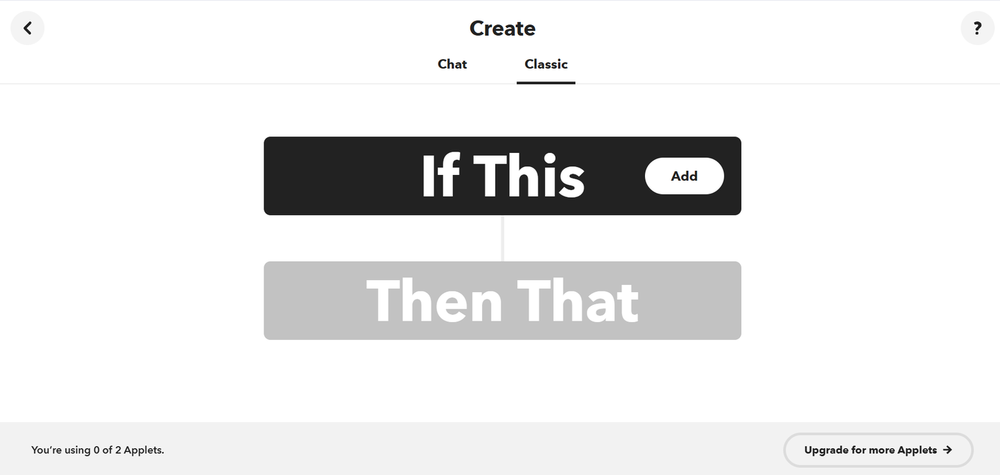
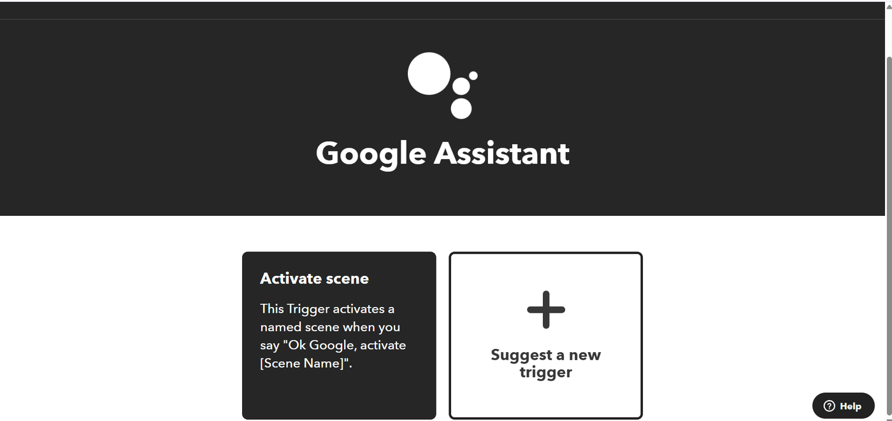
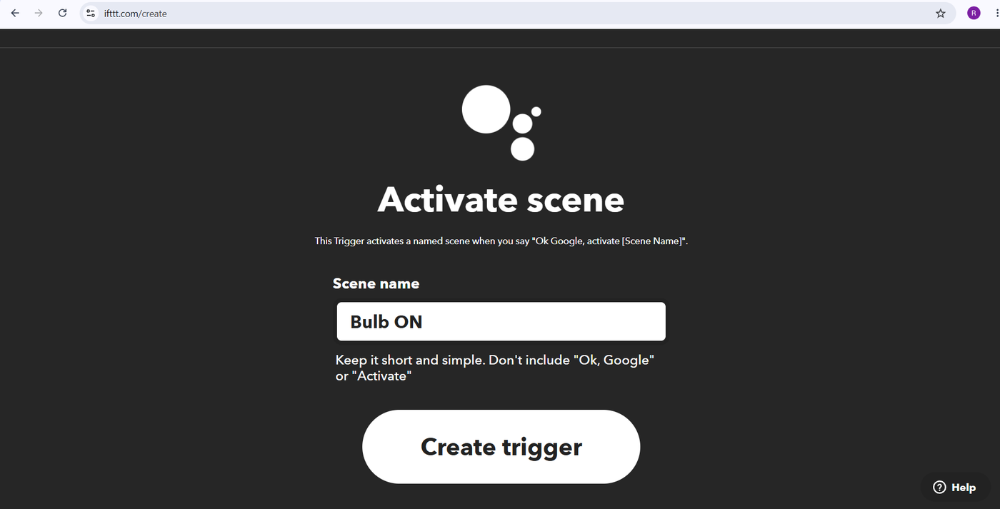
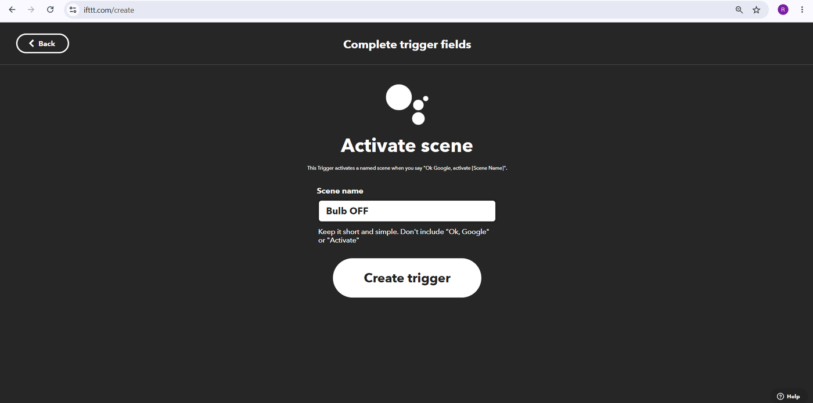
2. The action: send data to Adafruit IO
- Under Then That choose Adafruit, then Send data to Adafruit IO.
- Authorise IFTTT to read and write the Adafruit IO feed data.
- Pick the Adafruit account and the feed Bulb.
- In Data to save type ON for the ON applet and OFF for the OFF applet.
- Select Create action.
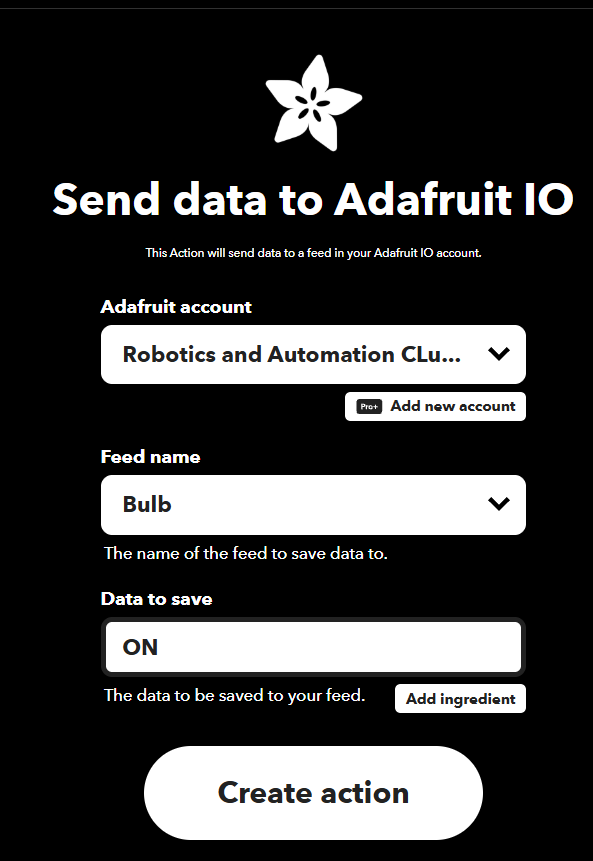
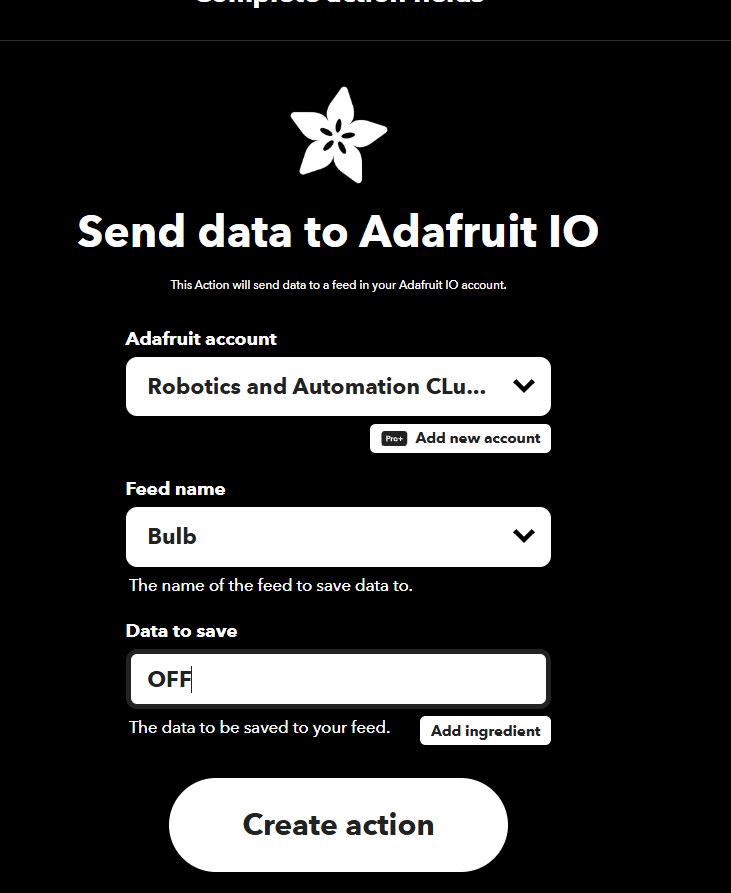
3. Review and finish
Each applet gets a title that doubles as a summary of what it does. After finishing, both show as Connected.
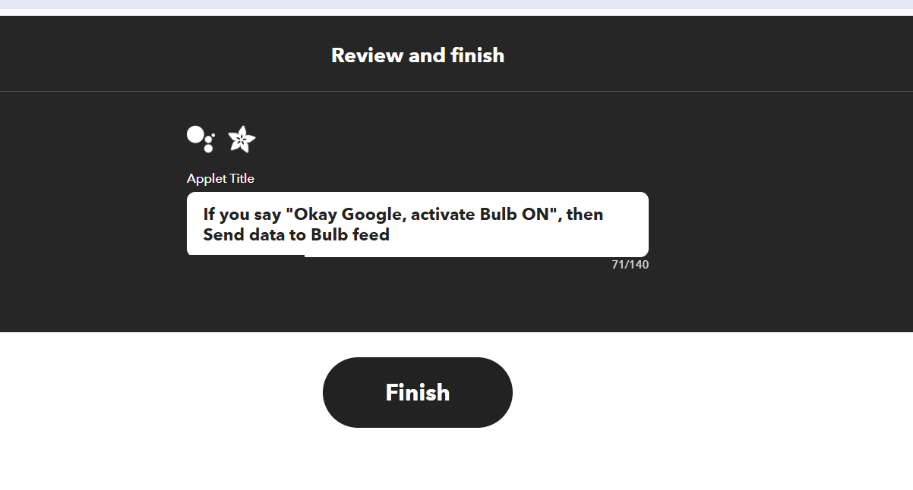
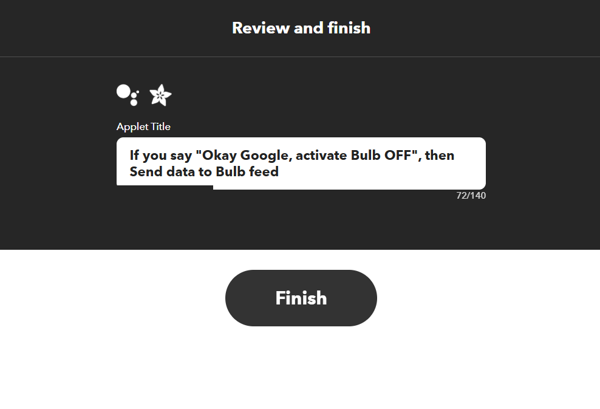
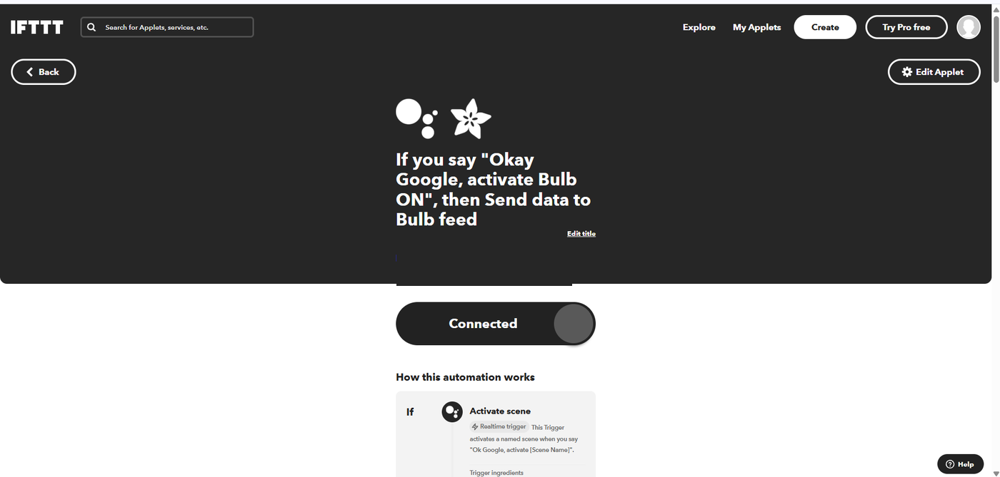
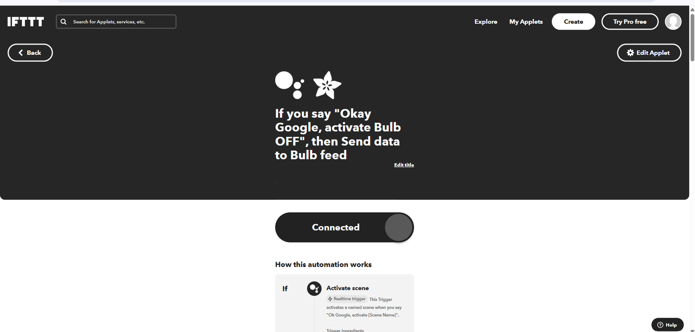
| Applet | Phrase | Sends to Bulb feed |
|---|---|---|
| Bulb ON | “Okay Google, activate Bulb ON” | ON |
| Bulb OFF | “Okay Google, activate Bulb OFF” | OFF |
ESP32 side
The firmware is the Task 2 sketch. It joins Wi-Fi, connects to Adafruit IO over MQTT, subscribes to kumaraguru_rac/feeds/Bulb and reacts to each value. The IFTTT action writes to that same feed, so no firmware change was needed to add voice control.
while ((subscription = mqtt.readSubscription(1000))) {
if (subscription == &bulbFeed) {
String command = (char *)bulbFeed.lastread;
Serial.print("Received MQTT Command: ");
Serial.println(command);
// BULB ON
if (command == "ON") {
digitalWrite(RELAY_PIN, LOW);
Serial.println("Relay: ON");
Serial.println("Bulb: ON");
}
// BULB OFF
else if (command == "OFF") {
digitalWrite(RELAY_PIN, HIGH);
Serial.println("Relay: OFF");
Serial.println("Bulb: OFF");
}
}
}The relay board is active-low: LOW switches it on and HIGH switches it off. See Task 2 for the full setup, libraries and wiring.
Testing
On start-up the Serial Monitor prints the account, feed and topic, then MQTT Connected!. After that, each spoken command appears as a received MQTT command followed by the relay and bulb state.
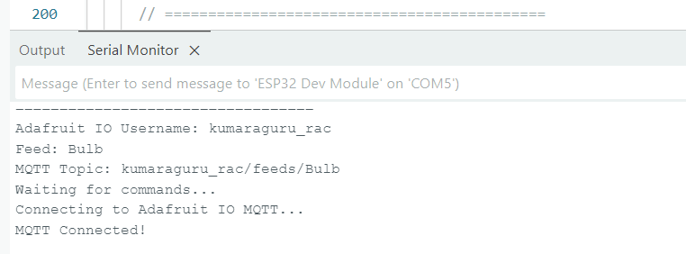
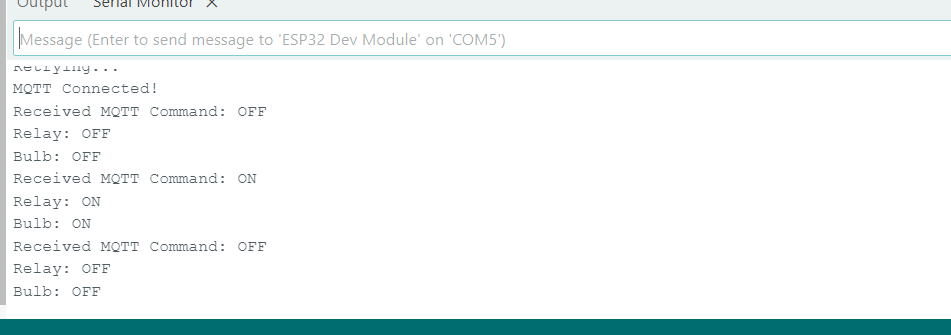
The sequence in the log is OFF, ON, OFF, which matches the order the phrases were spoken.
Hardware during the demo
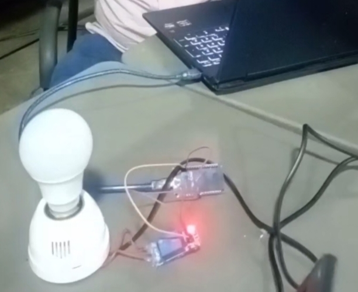
Test results
| Test | Evidence | Status |
|---|---|---|
| MQTT connection | Serial Monitor shows MQTT Connected! | PASS |
| ON command received | Received MQTT Command: ON | PASS |
| ON relay response | Relay: ON and Bulb: ON | PASS |
| OFF command received | Received MQTT Command: OFF | PASS |
| OFF relay response | Relay: OFF and Bulb: OFF | PASS |
| IFTTT ON applet | Shown as Connected in My Applets | PASS |
| IFTTT OFF applet | Shown as Connected in My Applets | PASS |
| Physical demonstration | Bulb and relay responding on the bench | PASS |
The recorded demo is in the working video above.
Notes from the build
| What happened | Why | What to do |
|---|---|---|
| The “Make a web request” action asks for an upgrade. | Webhook actions need IFTTT Pro on the free plan. | Use the Adafruit action instead. It works on the free plan. |
| Google Home says “Account linked, but no devices found”. | IFTTT scenes are voice triggers, not smart-home devices. | Nothing to fix. The commands still work. |
| The phrase must match the scene name. | The trigger is “activate <scene name>”. | Say exactly “activate Bulb ON” or “activate Bulb OFF”. |
| Bulb reacts a moment after speaking. | The command passes through several cloud services. | Expect a short delay before the relay clicks. |
Security
- The Adafruit IO key is a secret. Keep it out of reports, screenshots, repositories and slides.
- Screenshots of the key page, including its QR code, expose the key. Regenerate the key if that happened.
- Use placeholders such as
WIFI_PASSWORDandAIO_KEYin any shared code. - The bulb runs on mains voltage. Keep it isolated behind a rated relay.
In depth: how it really works
Task 3 adds almost no new code, so the interesting part is the chain of services. This section explains what each hop does, why the design needs two applets, what the log shows and where the delay comes from.
From a spoken phrase to a lit bulb
- The phone listens. You say “Okay Google, activate Bulb ON”. Google Assistant converts speech to text on Google’s servers.
- The phrase is matched to a scene. IFTTT’s Google Assistant service has a trigger called Activate scene. Whatever name you give it becomes the phrase after the word “activate”. Here the names are Bulb ON and Bulb OFF.
- IFTTT starts the applet. Google tells IFTTT the scene was activated. IFTTT finds the applet that owns that trigger and runs its action.
- The action calls Adafruit IO. Send data to Adafruit IO writes a value,
ONorOFF, to theBulbfeed on the account that was authorised earlier. The sender here is IFTTT calling Adafruit’s service, not an MQTT client. - Adafruit IO republishes it. Anything written to a feed is also published on that feed’s MQTT topic, so the ESP32’s existing subscription receives it.
- The ESP32 and relay act. The same handler from Task 2 reads the command and sets GPIO 26. The Serial Monitor prints the command and the relay and bulb state.
Design choices
Why two applets. An Activate scene trigger carries only a name. It has no ON or OFF argument, so one applet cannot decide between two values. One applet per state keeps each phrase tied to exactly one value, which is easy to reason about and easy to test.
Why the firmware did not change. The ESP32 knows two things: a topic and the words ON and OFF. It does not know who sent them. A dashboard, a voice command or a script can all control it. Keeping the device and the controllers separate in this way is called decoupling, and it is the main benefit of publish and subscribe.
Why Adafruit IO, not a web request. IFTTT can also send a generic web request, but that action asked for a paid plan on this account. The Adafruit action does the same job through the free plan.
Authorisation. When connecting the Adafruit service, Adafruit shows a consent page listing what IFTTT may do: read your name and username and read and write your feed data. Granting it lets IFTTT write to the feed without ever seeing your password.
Reading the Serial Monitor log
| Log line | What it proves |
|---|---|
MQTT Connected! | The broker accepted the username and key. This line must appear before any voice test, otherwise the problem is on the ESP32 side. |
Received MQTT Command: OFF | A message arrived on the Bulb topic with the text OFF, so the OFF applet fired and its data reached the feed. |
Relay: OFF / Bulb: OFF | The handler ran and set GPIO 26 HIGH, which opens the relay contacts. |
Received MQTT Command: ON | The ON applet fired. The log order OFF, ON, OFF matches the order the phrases were spoken. |
Relay: ON / Bulb: ON | GPIO 26 went LOW, the relay closed and the bulb lit. |
Where the delay comes from
Five separate services sit between the voice and the bulb: speech recognition, IFTTT, Adafruit IO, the Wi-Fi link and the ESP32 loop. Each adds a small wait, and the total is usually a second or two but varies. Nothing in the chain gives the ESP32 priority, so a short delay before the relay clicks is normal rather than a fault.
Limits and improvements
- Open loop. The ESP32 does not report its state back. If the relay fails, the cloud still thinks the command worked.
- Third-party dependence. If IFTTT or Google changes a feature, the voice path can stop working while the dashboard still works.
- Fixed phrasing. The phrase must match the scene name.
- Publish the relay state to a second feed so the dashboard can show the real state.
- Add a physical button as a local fallback.
- Use a retained value so the ESP32 restores the last state after a reboot.
Conclusion
The full path from a spoken command to a switching bulb works: Google Assistant, IFTTT, an Adafruit IO feed, MQTT, the ESP32, the relay and the bulb. The Serial Monitor shows every command arriving and every relay change, and the bench photograph shows the bulb responding. Each hop adds some delay, which is the trade-off for being able to say a command from anywhere.